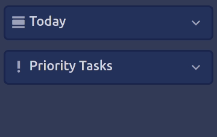
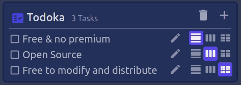

TodoKa
The free app that keeps track of your tasks
Only focus on what you will get done that day
It's easy to get overwelmed with tasks or to forget them. Thats why Todoka was created so you only have to worry about what you have to do today.

